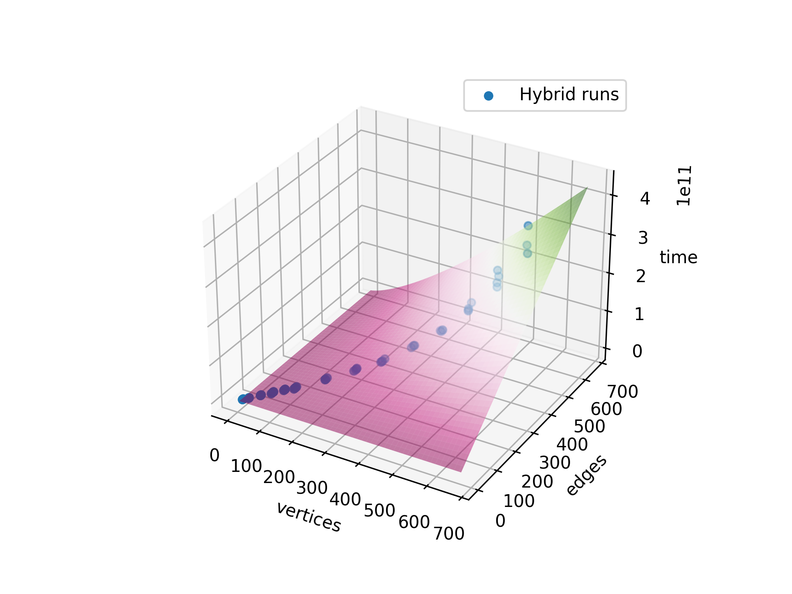

Minimum cut algorithms
Intro
Networks are everywhere, and they come in all shapes and sizes. From social networks to transportation networks, there's always a need to find the most efficient way to move data or resources through them. This is where minimum cut algorithms come in. These algorithms are designed to identify the smallest set of edges in a network that, when removed, disconnects the graph into two or more smaller subgraphs. However, with so many different minimum cut algorithms available, it can be challenging to know which one to choose for a particular problem. In this blog post, we will compare and contrast two popular minimum cut algorithms, the Karger and Stein algorithm and the Stoer and Wagner algorithm, and also introduce an exciting hybrid approach that combines the strengths of both. By the end of this post, you'll have a better understanding of which algorithm is best suited for your network optimization needs.
Implementation
Implementation of the algorithms described here can be found on GitHub, the provided code is the same one that generated the data in order to make comparisons on runtime
The problem
The problem we want to solve is to find a cut of a graph such that its weight is minimal. In other words, given a graph
\[G = (V, E)\]
where \[V = \{1,2,3,\dots,n\}\] is a set of \(n\) vertices and \[E \subseteq \{(u,v) \mid u,v \in V\}\] a set of \(|E| = m\) edges and a function
\[ w : E \rightarrow \mathbb{R} \]
a cost function, that returns the weight of each edge, we want to find
\[p_1, p_2 \subseteq V \mid p_1 \cap p_2 = \emptyset \, , \, p_1 \cup p_2 = V\]
such that
\[\text{cost}(p_1, p_2) = \sum_{u \in p_1, v \in p_2} w((u,v))\]
is minimized.
Karger and Stein
Karger and stein works by joining subsets of nodes, until only two remain. Those two are a cut of the graph. More in detail, given a Graph \(G = (V,E)\) where \(V = \{1,2,3,4,\dots,n\}\) is the set of vertices, the algorithm starts with a partition of \(V\) where each node appears by itself
\[\{\{1\}, \{2\}, \{3\}, \dots \{n\}\}\]
Then, let \(\mathcal{P}_a(V)\) be the set of partitions of \(V\), a
contraction procedure joins two subsets and produces a new
partition of \(V\).
\[\text{contraction} : \mathcal{P}_a(V) \longrightarrow \mathcal{P}_a(V)\]
This keeps happening, until the partition of \(V\) is made of only
two sets \(p_1, p_2\). At this stage the sum of the weights that
between the two nodes (the cut of the graph) is returned. This works
because of the way in which the contraction procedure selects the
nodes to join in the partitions. The two nodes are selected based on
a random selection based on the weight of the nodes. Nodes with an
higher weight have an higher probability of being selected.
Doing such procedure, allows to find a minimum cut with probability \(\frac{1}{\log(n)}\), therefore by repeating this procedure \(O(\log^2(n))\) times we can find a minimum cut with error probability less than \(\frac{1}{n}\).
Karger and Stein implemented as such has a complexity of
\[O(n^2\log^3(n))\]
Another bound
Another bound for Karger and Stein is possible to achieve, if we
consider that early contractions in the contraction procedure are
much less likely to contract on the minimum cut.
We call \(X_i\) the event that no edge of the minimum cut is contracted during the i-th iteration. We can define
\[X = \sum_{i=0}^k X_i\]
We know from the analysis of the algorithm that by contracting to \(t = \frac{n}{\sqrt{2}} + 1\) nodes the probability of contracting the minimum cut in this process is
\[P(n) \geq \frac{1}{2}\]
which means the probability of success at the i=th iteration is at least \(\frac{1}{2}\)
\[P(X_i = 1) \leq \frac{1}{2}\]
We want to find \(k\) such that our our random variable \(X\) (the sum of the success of each iteration) does not go ``too far away'' from the mean value \(\mu\)
\[\mu = E[X] = \sum_{i=0}^k E[X_i] = \frac{k}{2}\]
since \(X_i\)s are independent random indicator variables.
so we want to find
\[P\left(\left|X-\mu\right| < \epsilon \mu\right) = 1 - P\left( \left| X-\mu \right| > \epsilon \mu\right) \]
and we know by chernoff bound that
\[P\left(\left| X - \mu \right| > \epsilon \mu\right) \leq 2e^{-\frac{\mu\epsilon^2}{3}} \quad \text{for } 0 < \epsilon \leq 1\]
by replacing \(\mu = \frac{k}{2}\)
\[P\left(\left| X - \frac{k}{2} \right| > \epsilon \frac{k}{2}\right) \leq 2e^{-\frac{\frac{k}{2}\epsilon^2}{3}} \quad \text{for } 0 < \epsilon \leq 1\]
and therefore by choosing \(k = \frac{6}{\epsilon^2}\log(n) = O(\log(n))\) we have that
\[P\left(\left| X - \mu \right| > \epsilon \mu\right) \leq \frac{2}{n} = O\left(\frac{1}{n}\right)\]
and so
\[P\left(\left|X-\mu\right| < \epsilon \mu\right) = 1 - O \left( \frac{1}{n}\right)\]
therefore, for \(k = O\left(\log(n)\right)\) the algorithm gives a correct result with high probability with a complexity of
\[O\left(n^2 \log^2(n)\right)\]
Results

Figure 1: Karger and Stein run times against input size (number of vertices)
The function plotted is the complexity of the algorithm. The coefficient for the surface (under which all results should fall) is calculated as
\[\max \left( \frac{t}{n^2\log^2(n)} \right) \]
since the time of execution of the algorithm is maximized by this function and the different coefficient depend also on external factors (CPU throttle, memory allocations, etc.) and we're interested the behavior of the algorithm against the input nodes. As we can see in Figure 1 the run times follow the surface of the complexity function.
Stoer and Wagner
Stoer and Wagner works in another way. Instead of relying on random cuts relies on the fact that given a couple of nodes, They either are separated by the minimum cut or are on the same side of the cut. So given a graph \(G=(V,E)\), \(s,t \in V\), an \(s,t\) minimum cut is a cut \((S,T)\) of \(G\) s.t.
\[s\in S \vee t\in T\] \[w(S,T) \text{ is minimum among all \(s,t\) cuts}\]
So, let \((S,T)\) be a global min-cut for \(G\). For every pair \(s,t \in V\) either \(s\in S\) and \(t\in T\) or \(s\) and \(t\) are on the same side of the cut.
Stoer and wagner leverages this fact and searches for \(s,t \in V\) s.t. \((S, T)\) is a global min cut for \(G\). If that's also a global min-cut its weight is returned, otherwise the global min-cut for \(G\backslash\{s,t\}\) (The same graph as \(G\), where the nodes \(s\) and \(t\) are merged together) is also a global min-cut for \(G\).
Results
The complexity of this algorithm is
\[O(mn \log(n))\]
where \(n = |V|\) and \(m = |E|\). so the coefficient for the plot is calculated again as
\[\max \left( \frac{t}{mn\log(n)} \right)\]

Figure 2: Stoer and Wagner run times against input size (nodes and edges)
By plotting the run times against the input sizes (nodes and vertices) we can see that the plot follows the surface of the complexity function.
Hybrid approach
An Hybrid approach consist into merging the two approaches (Karger and Stein and Stoer and Wagner): the algorithm contracts the graph until there are \(t = \frac{n}{\sqrt{2}}+1\) nodes, from there, Stoer and Wagner is run on the contracted graph.
To study the complexity we can take look at the hybrid procedure:
def hybrid(graph): n = graph.n_vertices # t = O(long(n)) t = int(np.ceil((n / (n-1)) * np.log(n)) amin = np.Inf d_time = 0 for i in range(t): cut, d_time = hybrid_iteration(graph) if cut < amin: amin = cut d_time = perf_counter_ns() return amin, d_time
where the hybrid iteration is described as
def hybrid_iteration(graph): t = np.ceil(graph.n_vertices / np.sqrt(2) + 1) g = contract(graph, t) return stoer_wagner(g)
one hybrid_iteration consists in a contraction of the given graph,
then from that contraction we run the Stoer and Wagner
algorithm. Since the contraction is just a single loop running \(t =
\frac{n}{\sqrt{2}} + 1\) times, contract(graph,t) is
\(O(n)\). Stoer and Wagner on the resulting graph is
\(O(mn\log(n))\) by hypothesis.
How many times run the iteration
If we consider
\[X_i = \text{the \(i\)-th iteration has contracted a minimum cuts'edge}\]
we can have
\[X = \sum_{i=0}^k X_i\]
the sum of independent random variables that states how many times the random contraction have contracted the minimum cut of the graph. We know from hypothesis of Karger Stein algorithm, that
\[P(X_i = 1) \leq \frac{1}{2}\]
and by taking \(P(X_i = 1) = \frac{1}{2}\) as assumption we can find a lower bound on the number of iterations needed in order to find w.h.p. the minimum cut. We know that, on \(k\) iterations
\[\mu = E[X] = \sum_{i=0}^k E[X_i] = \sum_{i=0}^k \frac{1}{2} = \frac{k}{2} \]
And we want to find \(k\) s.t.
\[P\left(\frac{|\beta - \alpha|}{\alpha} > \epsilon \right) \leq O\left(\frac{1}{n}\right)\]
We can use the chernoff bound
\[P\left(|X - \mu| > \mu \delta \right) \leq 2e^{-\frac{\mu \delta^2}{3}}\]
that works for \(\delta \in (0,1]\) with \(\mu = \frac{k}{2}\). We conclude that, with \(k = \frac{4}{\epsilon^2}\log(n)\) we can say that
\[2 e^{-\frac{k\epsilon^2}{4}} = \frac{2}{n} = O\left( \frac{1}{n} \right)\]
So the same bound as for Karger and Stein applies, and the algorithm has complexity
\[O\left(mn\log^2(n)\right)\]
Results

Figure 3: Hybrid run times against input size (nodes and edges)
By plotting the run times against the input size (nodes and edges) we can see that they follow the surface induced by the complexity function of the algorithm.
Conclusions
On efficiency
By purely relying on the complexity analysis of the algorithms we should be able to see how the Karger and stein algorithm should perform worse than Stoer and Wagner and the Hybrid approach, which have instead comparable complexities. By plotting the run time of each algorithm:

Figure 4: Runtime comparison between the three algorithms
By looking closely to the graph we can see how the results meet our expectations: Karger and Stein perform generally worse than Stoer and Wagner, that performs in a similar way to our approach.
On discovery time
Discovery time tells us another story. Even though Karger and Stein performs badly compare to the other two algorithms, the discovery time for the graphs in the dataset is not that worse compared to the discovery time of the hybrid algorithm. Stoer and Wagner outperforms the two even from this point of view, showing how is a generally faster algorithm.

Figure 5: Discovery time comparison between the three algorithms